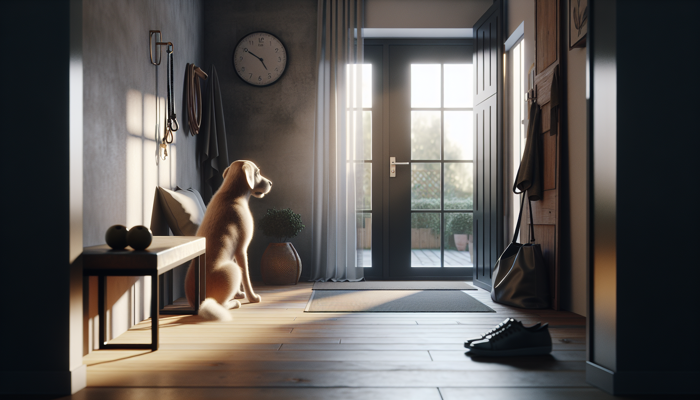

If your dog panics when you leave the house, you are not dealing with bad behavior or stubbornness. You may be seeing separation anxiety, a common and very real emotional disorder in dogs. For many dog owners, new puppy parents, and rescue adopters, this issue can feel overwhelming. You head out for a quick errand and return to barking complaints from neighbors, chewed door frames, accidents in the house, or a dog that is trembling and frantic.
The good news is that separation anxiety can improve with the right plan. Dogs do not act this way to punish us. They are struggling with distress when left alone or separated from a specific person. With patience, management, training, and in some cases veterinary support, most dogs can learn to feel safer and more relaxed during absences.
In this guide, we will cover the most common signs of separation anxiety in dogs, what causes it, how to tell it apart from boredom, and the science-backed solutions that actually help.
Separation anxiety is a panic-like response that happens when a dog is separated from an attachment figure or left alone. It is more than simply preferring company. A dog with separation anxiety may show intense distress before you leave, during your absence, or even when they sense your departure routine starting.
This condition can affect puppies, adult dogs, and seniors. It is especially common in rescue dogs, dogs that have gone through major life changes, and dogs with a history of rehoming or inconsistent routines. Some dogs are distressed only when left completely alone, while others panic if one specific person leaves, even if another family member stays home.
Understanding this difference matters because effective treatment is based on reducing fear, not punishing symptoms.
The signs of separation anxiety can range from mild to severe. Most happen only when the dog is alone or anticipates being left. Here are the behaviors owners notice most often:
One important clue is timing. A bored dog may chew a pillow at any point during the day. A dog with separation anxiety usually shows distress within minutes of your departure. If possible, set up a camera to observe what happens after you leave. Video often reveals whether the behavior is driven by panic, frustration, or simple lack of stimulation.
There is no single cause of separation anxiety. Instead, it usually develops through a combination of genetics, temperament, life history, and environment. Some dogs are naturally more sensitive or prone to anxiety. Others develop the problem after a major disruption.
Common triggers and contributing factors include:
For puppies, separation-related issues can also happen when they have not yet learned that alone time is safe and temporary. This does not always mean full separation anxiety, but it is a sign that gradual independence training is needed.
For rescue adopters, it is especially helpful to remember that your dog may still be adjusting. New environments, unfamiliar schedules, and attachment to a new caregiver can all influence behavior in the first weeks and months.
Many owners assume their dog is acting out because they are bored, under-exercised, or spiteful. While lack of enrichment can absolutely contribute to behavior problems, separation anxiety has a different emotional root. The behavior is driven by distress.
A bored dog may:
A dog with separation anxiety is more likely to:
Of course, some dogs experience both boredom and anxiety. That is why a full plan should include enrichment, routine, and emotional support rather than relying on exercise alone.
The most effective treatment for separation anxiety combines management with gradual behavior modification. The goal is not to force the dog to cope. It is to change how the dog feels about being alone.
Here are the core strategies supported by behavior professionals:
Progress is often not linear. Some dogs improve quickly, while others need months of careful work. Small wins matter.
When owners are frustrated, it is tempting to try methods that seem logical but often make anxiety worse. Avoid these common mistakes:
If your dog is injuring themselves, breaking teeth, clawing through doors, or having extreme panic, seek help right away from your veterinarian and a qualified force-free trainer or veterinary behavior professional.
If you suspect separation anxiety, start with a simple, realistic action plan:
For new puppy parents, the best prevention is gradual alone-time practice from the beginning. Keep sessions short, pair them with positive experiences, and return before the puppy becomes distressed. For rescue adopters, give your dog time to decompress and avoid expecting instant confidence in a brand-new home.
Separation anxiety in dogs can be stressful for everyone in the household, but it is treatable. The key is to view the behavior through the lens of fear and attachment, not disobedience. Once you understand the signs and commit to a structured, compassionate plan, you can help your dog build confidence and feel safer when alone.
Whether you are raising a puppy, settling in with a rescue, or supporting a longtime companion through a difficult transition, remember this: your dog is not giving you a hard time. Your dog is having a hard time. With patience, consistency, and science-backed support, things can get better.
Get our full Dog Training eBook series — new titles added weekly.